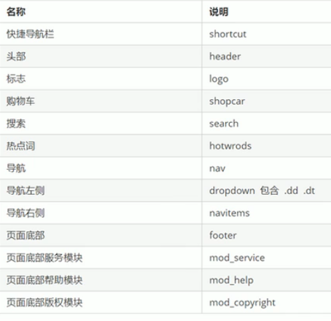
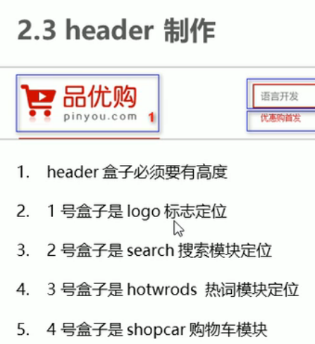
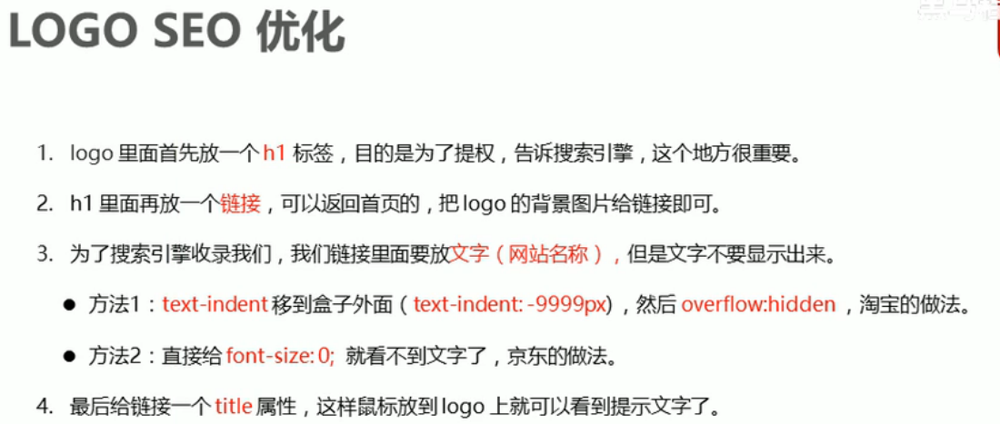

将量出来的版心定义成一个公共类
实际开发中，导航栏不会直接用链接a而是用li包含链接（li+a）的做法：
“一浮全浮”子元素有一个浮动其他子元素都加浮动
行内块元素之间有一个默认边距，可以让两元素设为浮动，浮动元素间没有间距。
写主页特有样式 index.css内名称：main包含focus newflash
焦点图不能直接放在盒子里，要放在focus->ul li内 要加上左右按钮和下面的原点
newflash内包含三块：news lifeservice bargin
news内包含头部news-hd和身体news-bd 注意做一个超出省略号
main写完第二块推荐模块racom包含两块recom_hd recom_bd
后台上传图片可能有大有小，因此应强制设置图片大小
用一个大楼层区包含floor 家电楼层类名w jiadian 内部分两块box_hd box_bd
为了做出tab效果tab_list决定哪个tab_content显示，因此box_hd里右侧盒子起名叫tab_list，box_bd内的盒子叫tab_content
tab_content内放tab_list内各个标签对应的内容如第一个起名tab_list_item